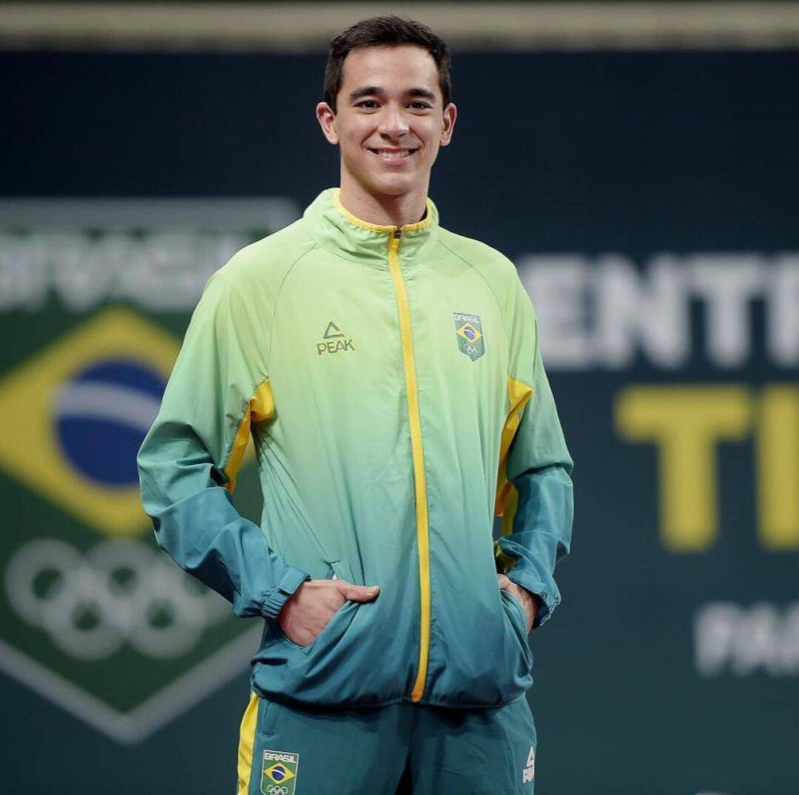

Hugo Calderano: O Mesatenista Brasileiro que Faz História
Hugo Calderano é um mesatenista brasileiro que tem conquistado grandes feitos em sua carreira. Nascido em 1996, Calderano começou a jogar tênis de mesa aos 8 anos e desde então tem se destacado em competições nacionais e internacionais.
Conquistas
Medalha de bronze nos Jogos Olímpicos da Juventude em 2014, em Nanjing, na China
Duas medalhas de ouro nos Jogos Pan-Americanos em 2015, no individual e por equipes
Quarto lugar nas Olimpíadas de Paris 2024
Carreira
Calderano começou sua carreira em 2014, quando conquistou o bronze nos Jogos Olímpicos da Juventude. Desde então, tem se destacado em competições internacionais, incluindo os Jogos Pan-Americanos e as Olimpíadas.
Paixão pelo Cubo Mágico
Além do tênis de mesa, Calderano também tem uma paixão pelo cubo mágico. Ele tem mais de 70 cubos de diferentes tipos e tamanhos e é conhecido por sua habilidade em resolver o cubo rapidamente.
Expectativas
Calderano é considerado um dos principais esperanças do tênis de mesa brasileiro nas Olimpíadas. Em Tóquio, aos 25 anos, ele queria continuar fazendo história e tinha chances reais de pódio.